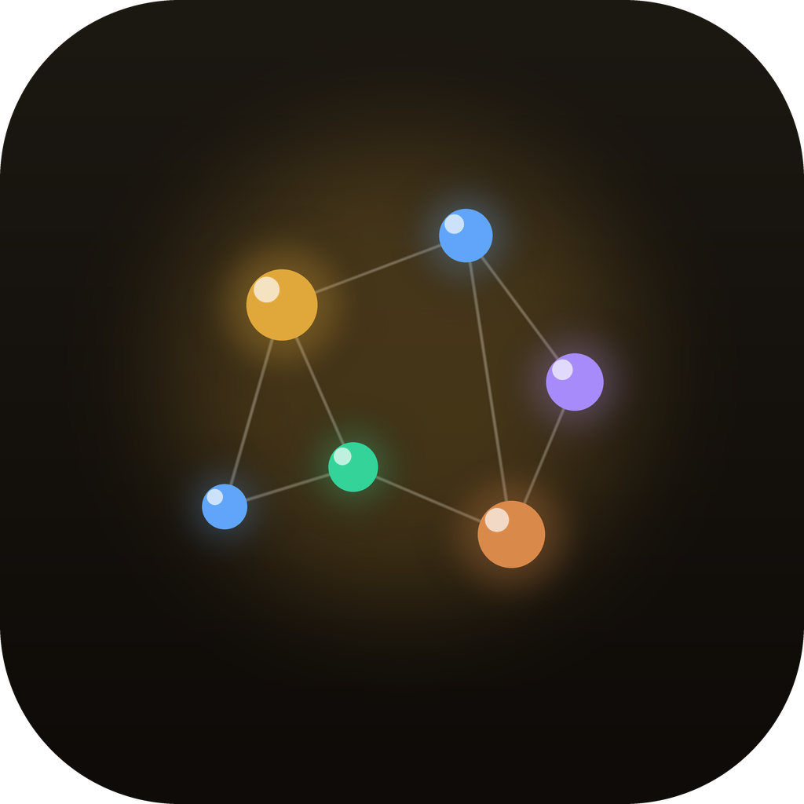
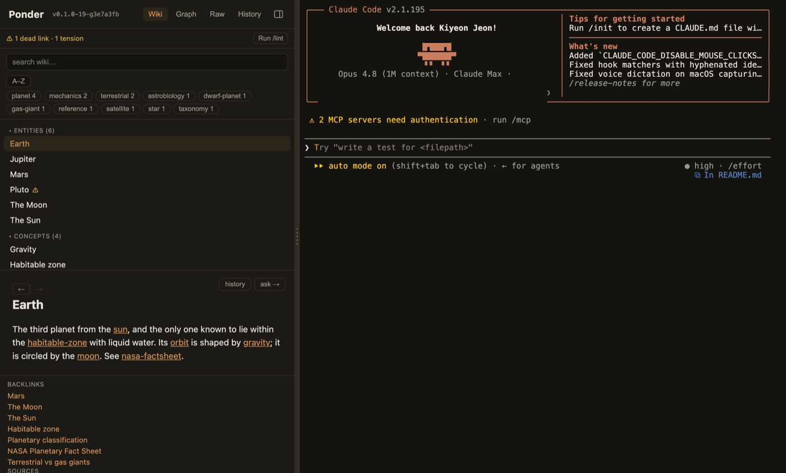
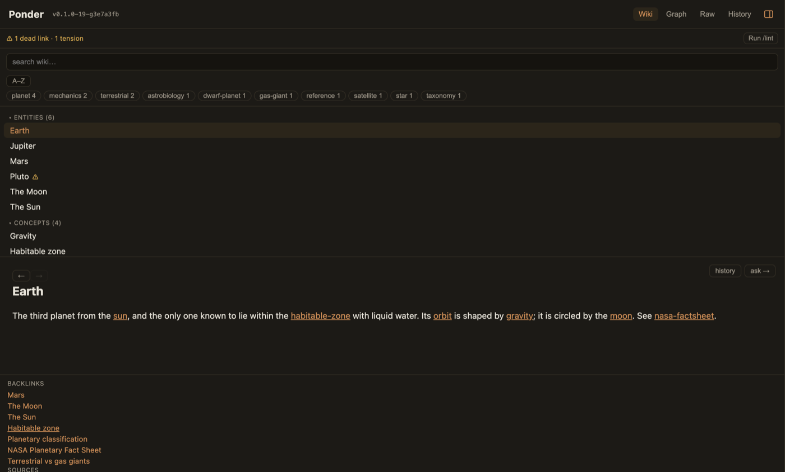
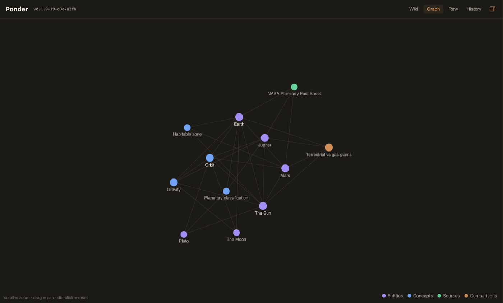
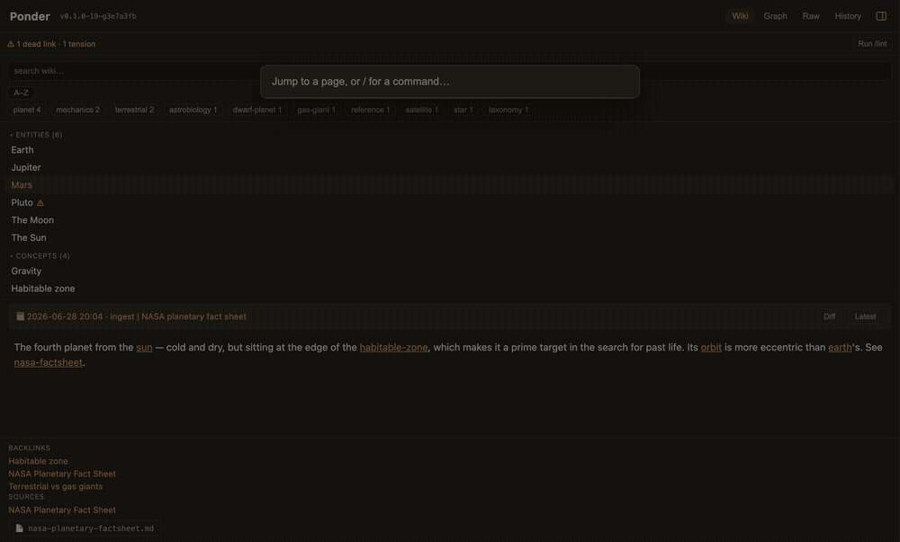
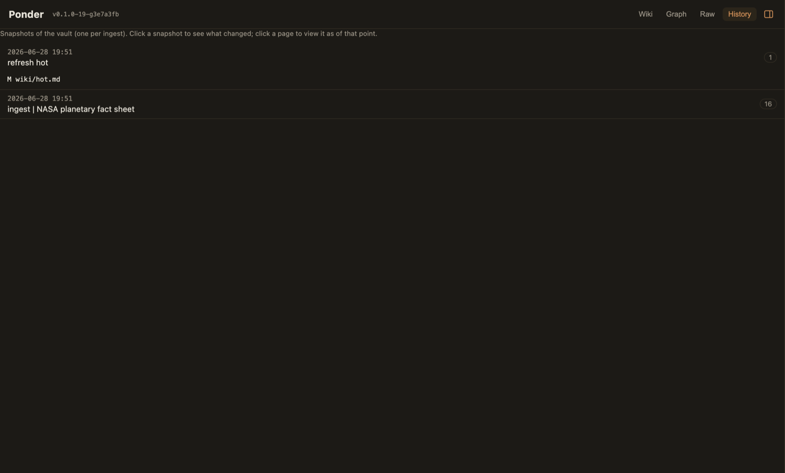

Your local-first second brain — Claude Code builds and maintains an interlinked Markdown wiki from your sources.
Download for macOSxcode-select --install)




Signed & notarized · auto-updates after install · Apple Silicon (arm64)